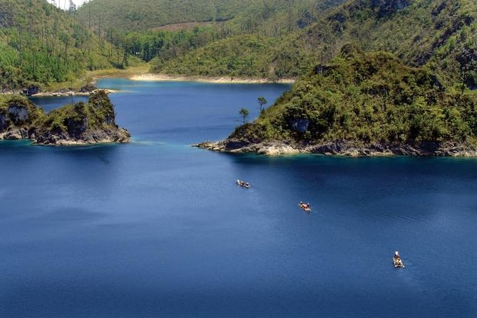
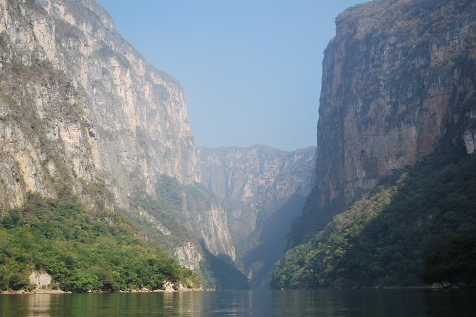
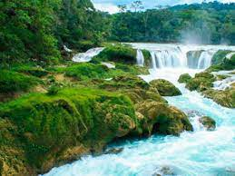

| Lugar |
Acerca de |
Paisaje |
| Tour en bicicleta por la montaña y los pueblos indígenas de Chiapas |
- Aprenda sobre las culturas indígenas de las tierras altas de Chiapas mientras realiza un emocionante paseo en bicicleta por las montañas. Con salida desde Tuxtla Gutiérrez o San Cristóbal de las Casas, recorra hermosas montañas y la naturaleza a través de un terreno de una pista.
- Disfrute de las tradiciones y el estilo de vida de las personas que forman parte de la tribu Tzotzil.
- Este tour cultural activo le mostrará una de las regiones más fascinantes de México. Incluye el traslado de ida y vuelta al hotel.
Detalles de la salida
- Se ofrece servicio de recogida para viajeros.
- Lo recogemos de cualquier hotel en Tuxtla Gutiérrez o San Cristóbal de las Casas.
|
|
| Lagunas de Montebello y Cascada de Chiflón desde San Cristóbal de las casas o Tuxtla |
- Experimente las maravillas naturales más emblemáticas del estado de Chiapas y México. Verá la cascada más impresionante de todo México y el conjunto de lagos de Montebello, cuyo color cambia entre ellos.
Detalles de salida
- Se ofrece servicio de recogida para viajeros.
- Recogemos en tres ciudades diferentes, cada horario depende de la ciudad de origen
- Desde Tuxtla Gutiérrez 6:30 a.m.
- Desde San Cristóbal de las Casas 8:00 a.m.
|
 |
| Excursión de día completo al Cañón del Sumidero con paseo en barco desde San Cristóbal de las Casas |
- Prepárese para gozar de una experiencia llena de aventura y emoción (por tierra y agua) y disfrutar de la carretera hasta el impresionante Cañón del Sumidero, haciendo paradas en los miradores de esta maravilla natural.
- A continuación, disfrute de una experiencia gastronómica comiendo en un bufé tradicional y admire la fuente de la mágica ciudad de Chiapa de Corzo.
Detalles de salida
- Se ofrece servicio de recogida para viajeros.
- Lo recogemos de cualquier hotel en San Cristóbal
|
 |
| Excursión de un día a las cascadas Las Nubes y Comitán |
- Disfrutará de un refrescante día de cultura y naturaleza en esta excursión de día completo de Tuxtla Gutiérrez o San Cristóbal de las Casas a la artística ciudad colonial de Comitán, uno de los “pueblos mágicos” de México, ciudades famosas por su belleza natural o importancia histórica.
- Pase el día mientras admira la belleza de las vertiginosas cascadas Las Nubes, paseando por el río Santo Domingo y conociendo más de cerca la cultura que hace a Comitán única. Esta es una excelente manera de ver algunas de las atracciones culturales y naturales de México. Incluye el traslado de ida y vuelta al hotel.
Detalles de la salida
- Se ofrece servicio de recogida para viajeros.
- Vuelva a confirmar su hora de recogida 1 día antes de la fecha de viaje.
|
 |